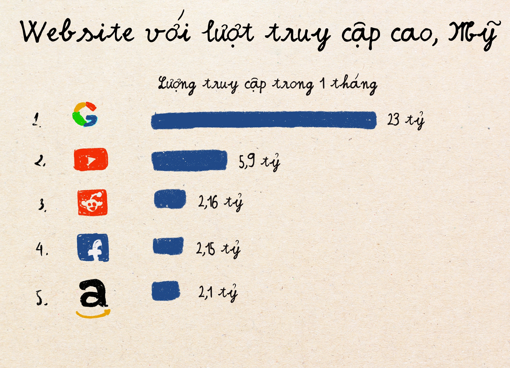
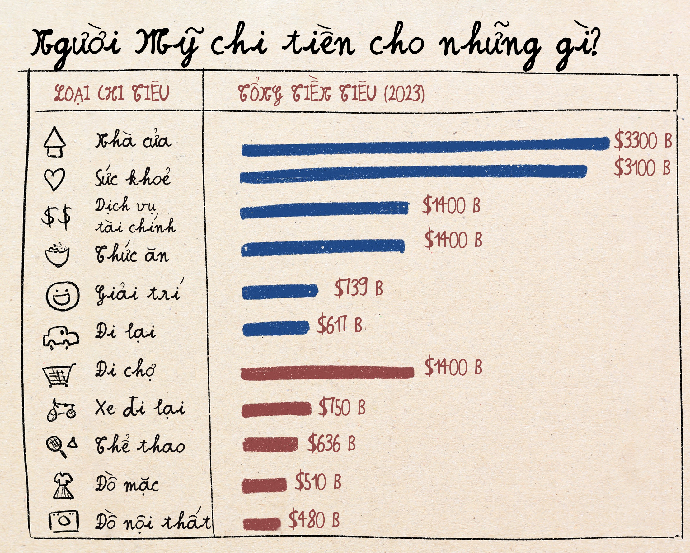
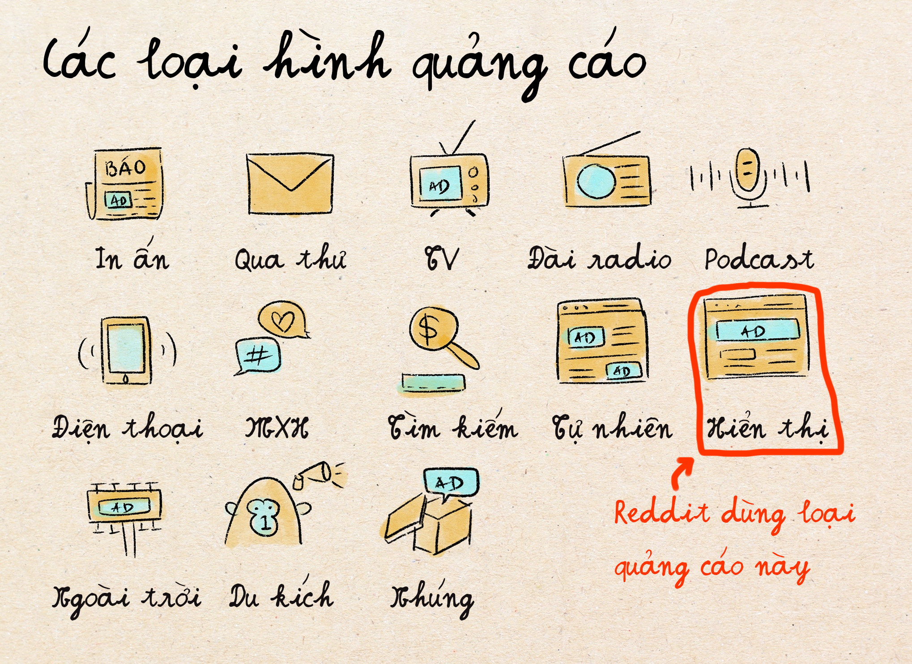
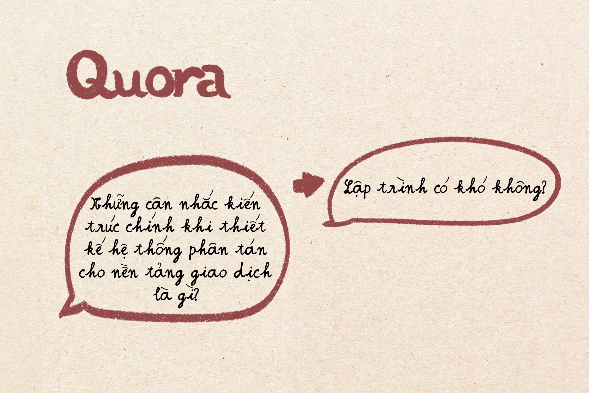
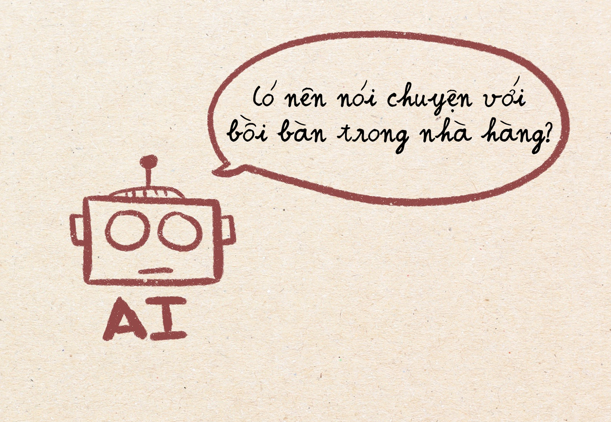
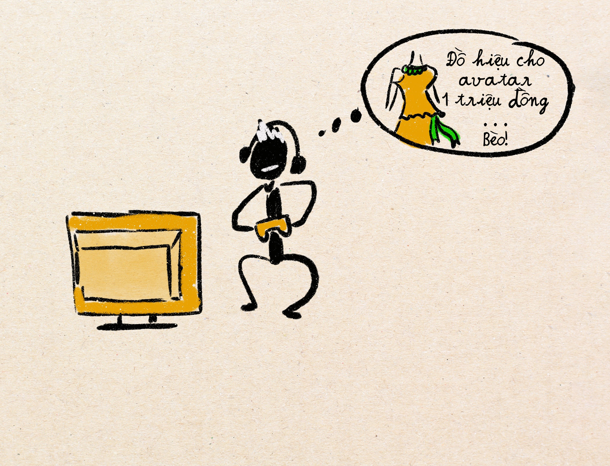
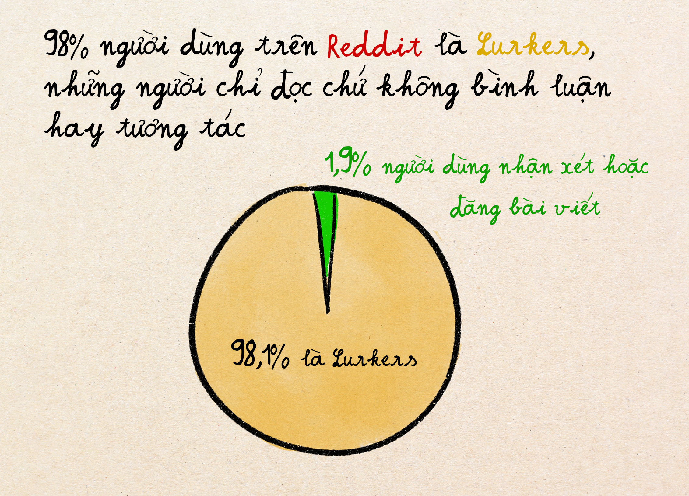
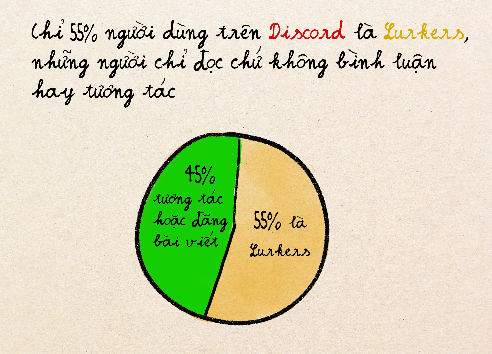

Nếu bạn phải đoán 3 trang web ở Mỹ có nhiều người truy cập hơn Facebook thì bạn sẽ đoán là ai?
Google.com? Đúng!
Youtube.com? Đúng!
… Ai nữa?
Trang web thứ ba, sau Youtube, là Reddit – nơi nhiều người có thể hỏi câu hỏi và tìm câu trả lời từ những người dùng khác trong các "cộng đồng" với chủ đề riêng. Nó na ná giống như Facebook Group vậy, nhưng người dùng hoàn toàn ẩn danh.
Ngoài Reddit, trên thị trường hiện nay có khá nhiều sản phẩm tập trung vào việc tạo ra cộng đồng mạng cho người dùng online: Facebook Group mà rất nhiều người Việt hay dùng, và những tên tuổi khác ít người biết tới hơn ở Việt Nam như Reddit, Discord, và Clubhouse.
Trong bài viết này, ta sẽ đào sâu hơn vào cách phân tích sự khác biệt của các sản phẩm cộng đồng mạng, cũng như bài toán kiếm tiền hóc búa mà các công ty này phải giải quyết. Bài viết sẽ tập trung vào cộng đồng mạng chứ không phải là mạng xã hội nhìn chung như Facebook, Instagram, v.v.
Trên Reddit, để xem các bài viết về một chủ đề nào đó, bạn có thể tìm sub-reddit cho chủ đề đó bằng cách gõ r/[tên cộng đồng]. Reddit có cực nhiều cộng đồng, với những chủ đề từ phổ biến như tiền bạc và thời trang tới chủ đề ngách, lạ như câu lạc bộ hài, nhóm hỗ trợ cho những người nghiện cờ bạc, v.v. Mỗi cộng đồng nhỏ này có văn hóa và quy tắc riêng.
Nghe qua thì Reddit giống giống với Facebook Group. Nhưng điểm khác chính đó là những bài viết và câu hỏi trên Reddit không gắn liền với tên và profile của người thật như trên Facebook. Và cũng chính vì thế mà ai cũng "nói thật" và "chia sẻ hết mình" – ngay cả những bí mật mà họ thường không kể cho những người thân và bạn bè.
Ví dụ nhé, bạn mà vào cộng đồng nói về chuyện yêu đương (r/relationships) thì sẽ thấy ngay những chủ đề bạn chưa bao giờ nói trong các bữa ăn gia đình như "Có bình thường không khi mình ghét món ăn mẹ chồng nấu". Vậy mà người ta sẽ sẵn sàng bộc lộ cảm nhận thực về những chủ đề này với mấy triệu người lạ trong cộng đồng. Đó, chính là quyền lực của việc "ẩn danh". Tất nhiên người dùng vẫn có thể xây dựng tên tuổi là một chuyên gia ở mảng nào đó bằng cách tương tác và trả lời nhiều câu hỏi trong cộng đồng đó, nhưng danh tính thật của bạn hoàn toàn được giấu đi.
Reddit cũng giải quyết được một vấn đề nhức nhối của các mạng xã hội nhìn chung: làm thế nào để giúp người dùng biết được bài viết nào đáng chú ý và đáng đọc? Để giải quyết, họ cho phép người dùng bỏ phiếu bầu, và bài nào được bình chọn nhiều nhất sẽ được đưa đến nhiều người đọc hơn. Không phải là hệ thống hoàn hảo, nhưng tốt hơn nhiều so với việc đưa bài cho người xem theo sắp xếp bài mới – cũ.
Nếu như vào xem các cộng đồng ở Reddit và Facebook Group có cảm giác như đi vào một sân vận động hàng ngàn người, thì Discord lại tìm ra một hướng đi khác: tạo cộng đồng nhỏ ấm cúng hơn với không gian riêng tư. Các nhóm của Discord có thể từ 5 tới 5000 thành viên, nhưng nó luôn có cảm giác thân mật, vì họ sử dụng cách giao tiếp như đang nhắn tin với bạn bè. Discord không quan tâm nhiều tới việc người dùng tìm kiếm những bài viết cũ, tin nhắn đã trôi đi thì khó tìm và không được đưa lại lên feed của người xem. Bằng cách này, nó giống như một cuộc trò chuyện tự nhiên và khiến người dùng có cảm giác phải tập trung giao tiếp trong chính thời điểm hiện tại.
Để khiến giao tiếp tự nhiên hơn, Discord thêm chức năng giao tiếp bằng gọi điện hay qua video, và cho phép người dùng chia sẻ màn hình nữa. Một cộng đồng gần gũi và có nhiều công cụ giao tiếp tuỳ theo sở thích và nhu cầu người dùng là sức mạnh của Discord.
Gần đây hơn nữa là sự trỗi dậy của Clubhouse, một trong những ý tưởng thú vị nhất trong lịch sử mạng xã hội hiện đại. Clubhouse tập trung tuỵệt đối vào phương pháp trò chuyện trực tiếp. Người dùng có thể ghé vào một phòng nói chuyện và nghe một người nổi tiếng nào đó thảo luận những chủ đề hay. Hoặc tham gia vào chính các cuộc trò chuyện với những người khác về chủ đề mình thích. Như truyền hình trò chuyện trực tiếp với người thật.
Clubhouse bỗng nhiên phát triển cực mạnh nhờ vào việc vũ khí hoá FOMO (fear of missing out - nỗi sợ lỡ mất cuộc chơi). Để vào được Clubhouse, bạn phải được "mời" chứ không phải muốn là vô. Và khi vào một cuộc nói chuyện nào đó thì nó chỉ diễn ra một lần, người dùng không thể xem lại hay truy cập các cuộc nói chuyện đã diễn ra trước đó. Những điều kiện này khiến người dùng sợ lỡ mất thông tin hay và nhảy vào các phòng trò chuyện tương tác.
Nhưng đây cũng chính là lý do mà Clubhouse nhanh chóng sụp đổ chỉ trong 18 tháng ra mắt. Nếu sản phẩm của bạn chỉ dựa vào tính khan hiếm và mới lạ thì chỉ sau một thời gian ngắn, tính khan hiếm và mới mẻ này chắc chắn sẽ mai một, và người dùng sẽ dần chán mà bỏ đi. Không những thế, nội dung hay trong các cuộc nói chuyện cũng không được ghi lại – và vì thế Clubhouse mất đi cơ hội dùng nội dung tốt đã có sẵn để thu hút người xem. Họ phải luôn dựa vào người dùng tương tác và trò chuyện thường xuyên để thu hút những người dùng mới.
Facebook Groups thì nhiều người Việt đã sử dụng rồi, nhưng mình muốn nhấn mạnh lại điểm đặc biệt của nó so với các cộng đồng khác: sự minh bạch về danh tính. Nó giống như bạn đang tham gia các câu lạc bộ của phường, xóm, nơi mà ai cũng biết bạn là ai, ở đâu, v.v. Và vì thế ai cũng văn minh lịch sự khi giao tiếp.
Vì sự minh bạch danh tính, ai có đề nghị / khuyến nghị gì thì cũng đáng tin hơn vì thường những lời khuyên đó gắn với tên tuổi củng chính người khuyên. Khác hẳn với Reddit, nhưng cũng là một cách mà Facebook Groups khác biệt với các cộng đồng khác.
Bài viết trên Facebook Groups thì sẽ luôn tồn tại và ai mới vào cũng có thể xem lại. Đây là một đặc điểm chung với Reddit, nhưng khác với cách Discord và ClubHouse hoạt động.
Những nền tảng xây dựng cộng đồng phân tích bên trên có một lựa chọn quy tắc và luật chơi khác nhau. Những đặc điểm này có thể tóm gọn qua 3 đặc điểm chính:
Mỗi lựa chọn đặc điểm khác nhau sẽ thu hút những loại người dùng và hành vi nhất định. Reddit sẽ thu hút người coi trọng sự thật hơn là mối quan hệ cộng đồng. Discord thu hút những người coi trọng sự "thuộc về" (belonging) một nhóm nào đó. Clubhouse thu hút người muốn phát sóng và trao đổi thông tin trực tiếp. Facebook Groups thu hút ai coi trọng quan hệ trong cộng đồng hơn là thông tin thuần tuý. Mỗi nền tảng tập trung vào thoả mãn "tâm lý cốt lõi" khác nhau của người dùng bằng các lựa chọn tính năng khác nhau.
Khi phân tích các nền tảng (platform), bạn sẽ nhận ra rằng những nền tảng thành công thường có "bản chất" rõ ràng và luôn gắn bó với những đặc trưng làm cho họ khác biệt. Các nền tảng cố gắng thoả mãn tất cả mọi thể loại người dùng với nhu cầu khác nhau thường kết thúc trong thất bại (Ví dụ: Google+).
Một nghịch lý khó hiểu nhất đối với mình đó là mặc dù Reddit là trang web được truy cập nhiều thứ 3 nước Mỹ, và có tới 850 triệu người dùng hàng ngày, họ kiếm được ít hơn $1 trên mỗi người dùng trong một năm. Trong khi đó, Discord với lượng truy cập nhỏ hơn Reddit nhiều lại xây dựng một doanh thu lớn hơn và người dùng Discord còn vui vẻ trả tiền đăng ký để sử dụng các tính năng premium hàng tháng.
Bạn có thể đã từng nghe khái niệm Consumerism (chủ nghĩa tiêu dùng), là một lối sống xã hội phổ biến tại Mỹ, nhấn mạnh việc chi tiêu cho hạnh phúc cá nhân thay vì tiết kiệm. Lối sống này đặc biệt khá được ưa chuộng trong các xã hội tư bản. Lấy nước Mỹ chẳng hạn, mặc dù chỉ chiếm khoảng 4% dân số thế giới, Mỹ chiếm khoảng 15–20% chi tiêu tiêu dùng toàn cầu.
Vì sao con số này lại liên quan tới Reddit? Vì phần lớn người dùng của Reddit là những người đi ngược lại lối sống theo chủ nghĩa tiêu dùng. Họ thường nghiên cứu kỹ, hỏi ý kiến người khác (trên Reddit), đắn đo chọn lựa trước khi quyết định mua món đồ gì đó. Văn hóa Reddit ca ngợi "nghiên cứu" kỹ càng hơn việc mua hàng bốc đồng, tiết kiệm hơn tiêu dùng, và hoài nghi hơn là tin tưởng vào các chiêu trò marketing. Đây là những người sẽ tính toán so sánh kỹ lưỡng hàng chục nhãn hàng balo để tìm cái balo hoàn hảo và sau đó kết luận rằng lựa chọn tốt nhất là mua một cái túi cũ trên eBay.
Các cộng đồng Reddit như r/BuyItForLife tồn tại rõ ràng để giúp mọi người mua ít đồ hơn, tốt hơn. r/personalfinance dạy mọi người tối ưu hóa chi tiêu và tránh lạm phát lối sống. r/frugal biến việc tiết kiệm từng xu thành một nghệ thuật. Người dùng Reddit nhìn nhận bản thân là người tiêu dùng thông minh không sa vào các thủ thuật marketing. Và vì thế, Reddit nếu dựa vào "quảng cáo sản phẩm" để thu tiền thì giống như bán băng đá cho chim cánh cụt. Doanh thu quảng cáo trên Reddit vì thế mà thấp hơn hẳn các cộng động khác như Facebook.
Nhưng ngay cả khi người dùng Reddit muốn xem quảng cáo, thiết kế của nền tảng khiến việc quảng cáo trở nên cực kỳ khó khăn. Vì Reddit được xây dựng xung quanh các cuộc thảo luận dựa trên các bài viết (không có hình ảnh / video), các thể loại quảng cáo cũng khá có hạn, phần lớn là quảng cáo banner mà khá nhiều người dùng thường bỏ qua dễ dàng.
Một số loại quảng cáo khác như video mà không bỏ qua được trên YouTube thì Reddit không dùng được vì nó phá vỡ trải nghiệm bài viết của người dùng. Hay các bài đăng được tài trợ trông giống như nội dung thường trên Instagram cũng khó vì cộng đồng tinh ý sẽ phát hiện ra, bỏ phiếu tiêu cực và đẩy bài xuống ngay. Reddit vì thế mà mắc kẹt với định dạng quảng cáo kém hiệu quả nhất trên một nền tảng đầy người dùng ghét mua sắm phung phí.
Nhưng có lẽ tổn hại nhất vẫn là vì Reddit đã dành nhiều năm tập trung vào việc phát triển lượng người dùng mà không xây dựng cơ sở hạ tầng quảng cáo tốt. Họ thiếu các chức năng cơ bản như công cụ nhắm đúng người dùng (targeting) để quảng cáo thứ mà họ quan tâm. Những công cụ này trong khi đó đã trở thành khá bình thường trong thế giới quảng cáo online.
Khoảng 22% subreddit lớn chứa nội dung NSFW (not safe for work, nghĩa là nội dung nhạy cảm không nên bàn bạc ở công ty hay những nơi công cộng) mà hầu hết nhà quảng cáo sẽ không muốn liên quan tới. Các nội dung này có thể gây nhiều tranh cãi, hoặc quá ngách và vì thế đặt người đọc vào tâm trạng không tuyệt vời lắm để nghĩ tới việc mua sản phẩm đang được quảng cáo. Vì thế mà phần lớn các công ty không trả tiền để mua chỗ quảng cáo trong những subreddit này.
Mặc dù không phải là một nền tảng xây dựng cộng đồng, Quora là một nền tảng trả lời câu hỏi từ cộng đồng khá giống Reddit. Mình muốn nhắc đến nó ở đây là vì Quora cho ta một bài học đau đớn từ việc đẩy mạnh mở rộng kiếm tiền từ quảng cáo mà không chú ý tới hậu quả nó có thể gây ra.
Để tăng lượng truy cập vào Quora và lấy doanh thu quảng cáo banner cao hơn, Quora bắt đầu khuyến khích những câu hỏi ngắn gọn không quá ngách, dễ thu hút lượng người dùng đại trà. Các bài viết tựa đề như "Những cân nhắc kiến trúc chính khi thiết kế hệ thống phân tán cho nền tảng giao dịch là gì?" thường thì ít người truy cập hơn là các câu hỏi như "Tại sao lập trình khó?" Từ một nền tảng có giá trị vì có các chuyên gia tham gia trả lời những câu hỏi mang tính hơi "bác học" hơn thường thấy, Quora bắt đầu chuyển sang nhấn mạnh những câu hỏi chung chung, thân thiện với SEO cho Google tìm kiếm.
Không những thế, Quora cho ra đời chương trình "chia sẻ doanh thu" cho những bài viết nào có nhiều lượng truy cập hơn. Chương trình này ngay lập tức khuyến khích người viết và hỏi chuyển sang những câu hỏi ngắn mang tính clickbait, tối ưu hoá để tăng truy cập thay vì giúp người xem tìm kiếm kiến thức thực sự. Các chuyên gia với bài viết chất lượng trước đó cũng ngừng tham gia vì họ không được coi trọng và được đẩy bài lên như trước nữa.
Giọt nước làm tràn ly cuối cùng là khi Quora bắt đầu ưu tiên nội dung viết bới AI vì nhiều lúc các bài này lại được click nhiều hơn trên Google tìm kiếm với chiến lược SEO tốt. Tới thời điểm này dường như Quora đã hoàn toàn từ bỏ sứ mệnh cốt lõi khi họ mới bắt đầu: tạo một sân chơi trao đổi kiến thức chuyên sâu và có ý nghĩa. Quora gần đây toàn tràn lan những câu hỏi quái đản được Bot tạo ra và tự trả lời như: "Ăn cơm có tốt cho sức khoẻ không?" "Có nên nói chuyện với bồi bàn trong nhà hàng", v.v.
Với chất lượng càng ngày càng xuống vì chiến lược quảng cáo không tốt, ta có thể thấy, kiếm tiền từ quảng cáo không phải là việc đơn giản cứ làm vô tội vạ được. Từ Reddit không thể kiếm tiền nhiều từ quảng cáo tới Quora kiếm ra tiền nhưng cũng phá luôn giá trị sản phẩm, bạn có thể thắc mắc: liệu có cách nào khác để các nền tảng cộng động sống sót trên thị trường?
Ngược lại với Reddit, Discord lại rất thành công trong việc kiếm tiền, với chiến lược quan trọng nhất là: kiếm tiền từ nhiều nguồn doanh thu. Discord không chỉ phụ thuộc vào quảng cáo, họ còn sử dụng các cách kiếm tiền khác như:
Sự đa dạng hóa này giúp giảm áp lực lên bất kỳ nguồn doanh thu nào và cung cấp nhiều cách để người dùng hỗ trợ nền tảng.
Ngoài ra, không giống như văn hóa chống lối sống tiêu dùng (consumerism) của Reddit, những năm đầu khi mới ra mắt, cộng đồng của Discord tập trung vào giới chơi game, những người thích chi tiền cho những thứ cải thiện trải nghiệm của họ. Game thủ thường xuyên bỏ gần 100 đô cho game mới, vài trăm đô cho tai nghe tốt hơn, và cả vài nghìn đô cho thẻ máy tính đồ họa để game chạy mướt hơn, v.v. Họ đã luôn có sẵn tâm lý "trả tiền thì mới có trải nghiệm tốt."
Khi Discord cung cấp chất lượng nâng cao, emoji tùy chỉnh và các tính năng tăng chất lượng và độ mạnh của máy chủ, game thủ không thấy đây là chi phí phù phiếm mà coi chúng như những khoản đầu tư chính đáng. Và nền văn hoá của game thủ này cũng lây lan sang các cộng đồng khác khi Discord mở rộng số lượng cộng đồng ra ngoài game.
Khác với các subreddit có thể có hàng nghìn, hàng triệu người tham gia, các cộng đồng Discord nhỏ hơn với cảm giác thân mật gần gũi hơn. Và vì thế, người dùng có cảm giác "thuộc về" cộng đồng mạnh mẽ, và sẵn sàng bỏ tiền ra để đầu tư cho các tính năng tốt cho cộng đồng mình tham gia. Không những thế, vì giao tiếp trong Discord như chat với bạn bè trong thời điểm hiện tại, người dùng Discord tương tác một cách tích cực và thường xuyên hơn (45%) thay vì chỉ lướt trang đọc bài người khác mà không tương tác gì ngoài việc đọc (Nhóm người này là Lurkers và chiếm 55% người dùng trên Discord). Điều này dẫn đến việc trả phí trên Discord có vẻ hợp lý hơn.
 Với các nền tảng cộng đồng, ta có thể thấy "tâm lý" người dùng chính của nền tảng đó đóng vai trò cực kỳ quan trọng trong việc nền tảng cộng đồng đó nên kiếm tiền bằng cách nào. Chiến lược kiếm tiền phải ăn nhập với tâm lý của chính cộng đồng họ đang xây dựng.
Ngoài ra, ta có thể thấy các mô hình doanh thu hoạt động tốt thường xoay quanh 1) Phí trả cho các tính năng nâng cao 2) Lấy phí từ khán giả trả cho người viết / sáng tạo nội dung trên cộng đồng, và 3) mô hình lấy phí giao dịch khác trong cộng đồng như khi các thành viên bán hàng và dịch vụ cho nhau. Các mô hình quảng cáo thông thường dựa vào thông tin người dùng có vẻ không phù hợp với các nền tảng cộng đồng, và có khi còn khiến người dùng mất đi niềm tin vào nền tảng.